2024 Advanced Higher Chemistry marking instructions
Source: Scottish Qualifications Authority (SQA) / Qualifications Scotland. This is a StemInteract HTML companion, not an official HTML edition. Selectable text is supplied alongside original page images. Use the images or original PDF for equations, powers, fractions, vector notation, tables and diagrams; text extraction cannot fully preserve mathematical layout.
Jump to a question
PDF page 1
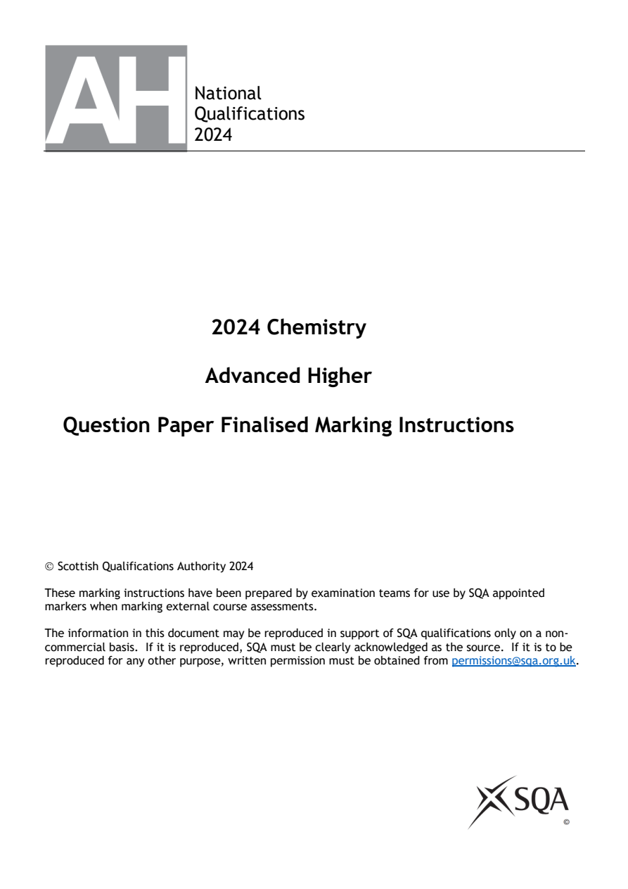
Selectable page text
National
Qualifications
2024
2024 Chemistry
Advanced Higher
Question Paper Finalised Marking Instructions
© Scottish Qualifications Authority 2024
These marking instructions have been prepared by examination teams for use by SQA appointed
markers when marking external course assessments.
The information in this document may be reproduced in support of SQA qualifications only on a non-
commercial basis. If it is reproduced, SQA must be clearly acknowledged as the source. If it is to be
reproduced for any other purpose, written permission must be obtained from permissions@sqa.org.uk.PDF page 2
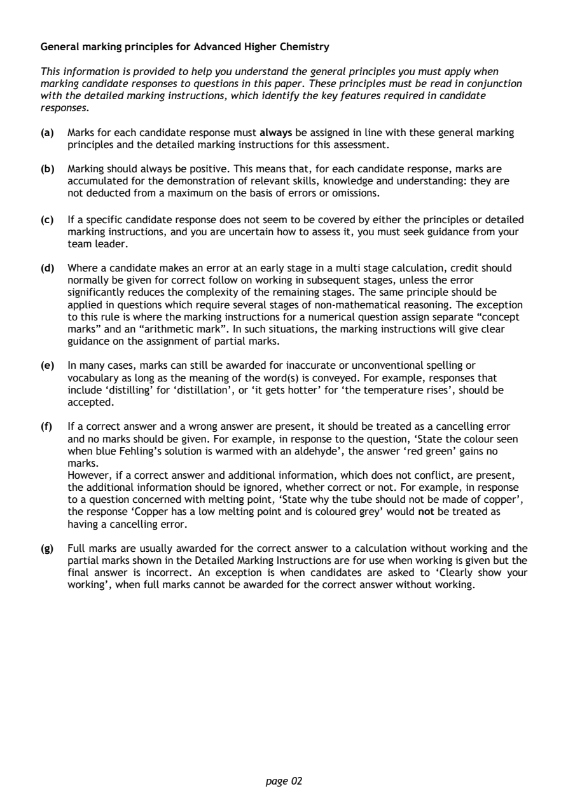
Selectable page text
General marking principles for Advanced Higher Chemistry
This information is provided to help you understand the general principles you must apply when
marking candidate responses to questions in this paper. These principles must be read in conjunction
with the detailed marking instructions, which identify the key features required in candidate
responses.
(a) Marks for each candidate response must always be assigned in line with these general marking
principles and the detailed marking instructions for this assessment.
(b) Marking should always be positive. This means that, for each candidate response, marks are
accumulated for the demonstration of relevant skills, knowledge and understanding: they are
not deducted from a maximum on the basis of errors or omissions.
(c) If a specific candidate response does not seem to be covered by either the principles or detailed
marking instructions, and you are uncertain how to assess it, you must seek guidance from your
team leader.
(d) Where a candidate makes an error at an early stage in a multi stage calculation, credit should
normally be given for correct follow on working in subsequent stages, unless the error
significantly reduces the complexity of the remaining stages. The same principle should be
applied in questions which require several stages of non-mathematical reasoning. The exception
to this rule is where the marking instructions for a numerical question assign separate “concept
marks” and an “arithmetic mark”. In such situations, the marking instructions will give clear
guidance on the assignment of partial marks.
(e) In many cases, marks can still be awarded for inaccurate or unconventional spelling or
vocabulary as long as the meaning of the word(s) is conveyed. For example, responses that
include ‘distilling’ for ‘distillation’, or ‘it gets hotter’ for ‘the temperature rises’, should be
accepted.
(f) If a correct answer and a wrong answer are present, it should be treated as a cancelling error
and no marks should be given. For example, in response to the question, ‘State the colour seen
when blue Fehling’s solution is warmed with an aldehyde’, the answer ‘red green’ gains no
marks.
However, if a correct answer and additional information, which does not conflict, are present,
the additional information should be ignored, whether correct or not. For example, in response
to a question concerned with melting point, ‘State why the tube should not be made of copper’,
the response ‘Copper has a low melting point and is coloured grey’ would not be treated as
having a cancelling error.
(g) Full marks are usually awarded for the correct answer to a calculation without working and the
partial marks shown in the Detailed Marking Instructions are for use when working is given but the
final answer is incorrect. An exception is when candidates are asked to ‘Clearly show your
working’, when full marks cannot be awarded for the correct answer without working.
page 02PDF page 3
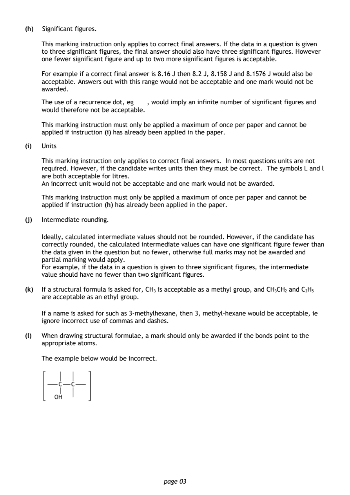
Selectable page text
(h) Significant figures.
This marking instruction only applies to correct final answers. If the data in a question is given
to three significant figures, the final answer should also have three significant figures. However
one fewer significant figure and up to two more significant figures is acceptable.
For example if a correct final answer is 8.16 J then 8.2 J, 8.158 J and 8.1576 J would also be
acceptable. Answers out with this range would not be acceptable and one mark would not be
awarded.
The use of a recurrence dot, eg , would imply an infinite number of significant figures and
would therefore not be acceptable.
This marking instruction must only be applied a maximum of once per paper and cannot be
applied if instruction (i) has already been applied in the paper.
(i) Units
This marking instruction only applies to correct final answers. In most questions units are not
required. However, if the candidate writes units then they must be correct. The symbols L and l
are both acceptable for litres.
An incorrect unit would not be acceptable and one mark would not be awarded.
This marking instruction must only be applied a maximum of once per paper and cannot be
applied if instruction (h) has already been applied in the paper.
(j) Intermediate rounding.
Ideally, calculated intermediate values should not be rounded. However, if the candidate has
correctly rounded, the calculated intermediate values can have one significant figure fewer than
the data given in the question but no fewer, otherwise full marks may not be awarded and
partial marking would apply.
For example, if the data in a question is given to three significant figures, the intermediate
value should have no fewer than two significant figures.
(k) If a structural formula is asked for, CH₃ is acceptable as a methyl group, and CH₃CH₂ and C₂H₅
are acceptable as an ethyl group.
If a name is asked for such as 3-methylhexane, then 3, methyl-hexane would be acceptable, ie
ignore incorrect use of commas and dashes.
(l) When drawing structural formulae, a mark should only be awarded if the bonds point to the
appropriate atoms.
The example below would be incorrect.
page 03PDF page 4
Paper 1, Question 1Paper 1, Question 2Paper 1, Question 3Paper 1, Question 4Paper 1, Question 5Paper 1, Question 6Paper 1, Question 7Paper 1, Question 8Paper 1, Question 9Paper 1, Question 10Paper 1, Question 11Paper 1, Question 12Paper 1, Question 13Paper 1, Question 14Paper 1, Question 15Paper 1, Question 16Paper 1, Question 17Paper 1, Question 18Paper 1, Question 19Paper 1, Question 20Paper 1, Question 21Paper 1, Question 22Paper 1, Question 23Paper 1, Question 24Paper 1, Question 25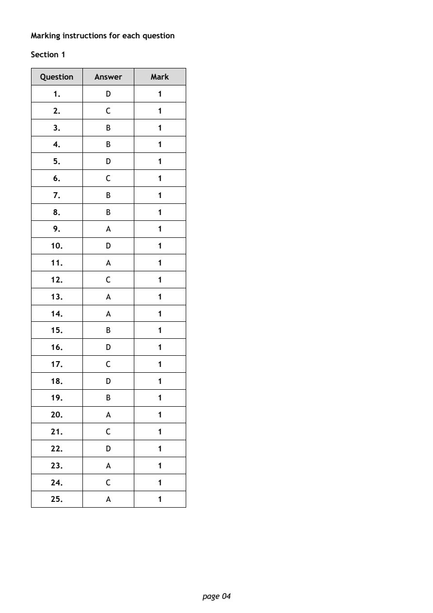
Selectable page text
Marking instructions for each question
Section 1
Question Answer Mark
1. D 1
2. C 1
3. B 1
4. B 1
5. D 1
6. C 1
7. B 1
8. B 1
9. A 1
10. D 1
11. A 1
12. C 1
13. A 1
14. A 1
15. B 1
16. D 1
17. C 1
18. D 1
19. B 1
20. A 1
21. C 1
22. D 1
23. A 1
24. C 1
25. A 1
page 04PDF page 5
Paper 2, Question 1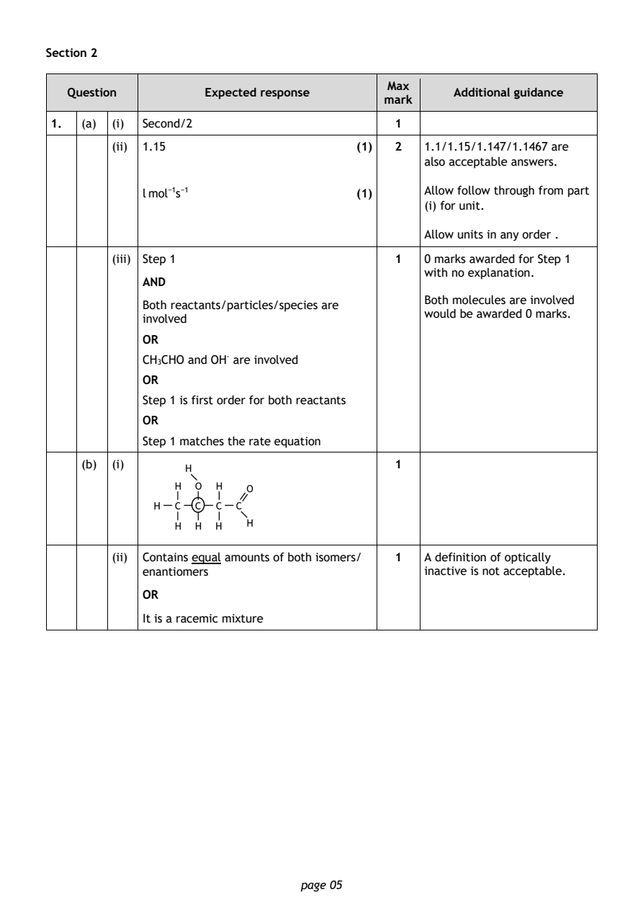
Selectable page text
Section 2
Max
Question Expected response Additional guidance
mark
1. (a) (i) Second/2 1
(ii) 1.15 (1) 2 1.1/1.15/1.147/1.1467 are
also acceptable answers.
l mol⁻¹s⁻¹ (1) Allow follow through from part
(i) for unit.
Allow units in any order .
(iii) Step 1 1 0 marks awarded for Step 1
with no explanation.
AND
Both molecules are involved
Both reactants/particles/species are
would be awarded 0 marks.
involved
OR
CH₃CHO and OH⁻ are involved
OR
Step 1 is first order for both reactants
OR
Step 1 matches the rate equation
(b) (i) 1
(ii) Contains equal amounts of both isomers/ 1 A definition of optically
enantiomers inactive is not acceptable.
OR
It is a racemic mixture
page 05PDF page 6
Paper 2, Question 2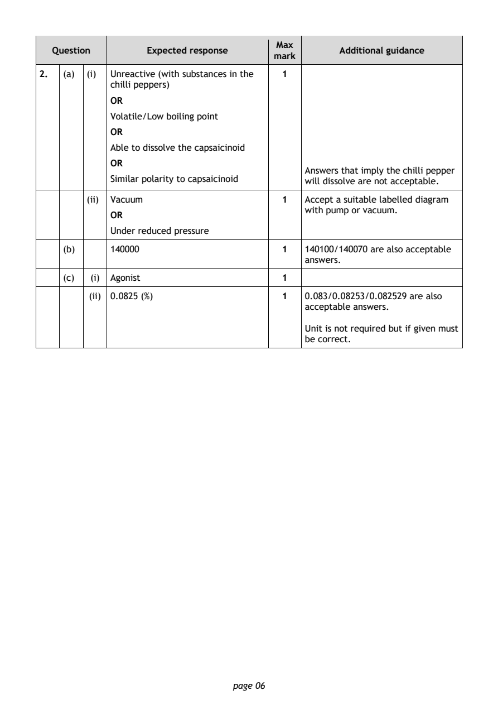
Selectable page text
Max
Question Expected response Additional guidance
mark
2. (a) (i) Unreactive (with substances in the 1
chilli peppers)
OR
Volatile/Low boiling point
OR
Able to dissolve the capsaicinoid
OR
Answers that imply the chilli pepper
Similar polarity to capsaicinoid will dissolve are not acceptable.
(ii) Vacuum 1 Accept a suitable labelled diagram
with pump or vacuum.
OR
Under reduced pressure
(b) 140000 1 140100/140070 are also acceptable
answers.
(c) (i) Agonist 1
(ii) 0.0825 (%) 1 0.083/0.08253/0.082529 are also
acceptable answers.
Unit is not required but if given must
be correct.
page 06PDF page 7
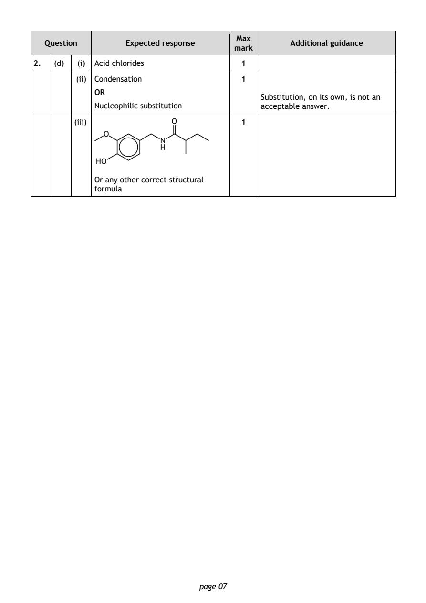
Selectable page text
Max
Question Expected response Additional guidance
mark
2. (d) (i) Acid chlorides 1
(ii) Condensation 1
OR
Substitution, on its own, is not an
Nucleophilic substitution acceptable answer.
(iii) 1
Or any other correct structural
formula
page 07PDF page 8
Paper 2, Question 3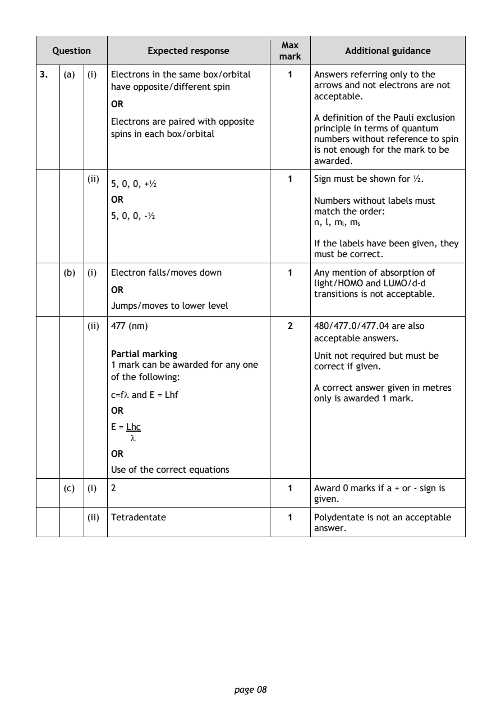
Selectable page text
Max
Question Expected response Additional guidance
mark
3. (a) (i) Electrons in the same box/orbital 1 Answers referring only to the
have opposite/different spin arrows and not electrons are not
acceptable.
OR
A definition of the Pauli exclusion
Electrons are paired with opposite
principle in terms of quantum
spins in each box/orbital
numbers without reference to spin
is not enough for the mark to be
awarded.
(ii) 1 Sign must be shown for ½.
5, 0, 0, +½
OR Numbers without labels must
match the order:
5, 0, 0, -½
n, l, m, m
l s
If the labels have been given, they
must be correct.
(b) (i) Electron falls/moves down 1 Any mention of absorption of
light/HOMO and LUMO/d-d
OR
transitions is not acceptable.
Jumps/moves to lower level
(ii) 477 (nm) 2 480/477.0/477.04 are also
acceptable answers.
Partial marking Unit not required but must be
1 mark can be awarded for any one correct if given.
of the following:
A correct answer given in metres
c=fλ and E = Lhf
only is awarded 1 mark.
OR
E = Lhc
λ
OR
Use of the correct equations
(c) (i) 2 1 Award 0 marks if a + or - sign is
given.
(ii) Tetradentate 1 Polydentate is not an acceptable
answer.
page 08PDF page 9
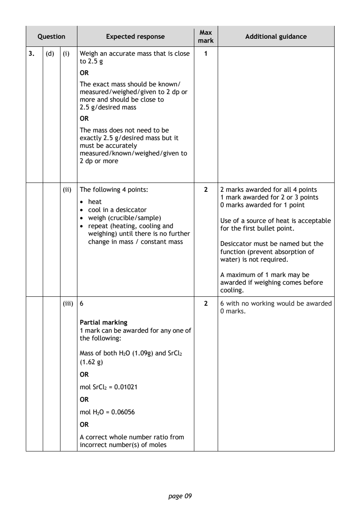
Selectable page text
Max
Question Expected response Additional guidance
mark
3. (d) (i) Weigh an accurate mass that is close 1
to 2.5 g
OR
The exact mass should be known/
measured/weighed/given to 2 dp or
more and should be close to
2.5 g/desired mass
OR
The mass does not need to be
exactly 2.5 g/desired mass but it
must be accurately
measured/known/weighed/given to
2 dp or more
(ii) The following 4 points: 2 2 marks awarded for all 4 points
1 mark awarded for 2 or 3 points
• heat
0 marks awarded for 1 point
• cool in a desiccator
• weigh (crucible/sample)
Use of a source of heat is acceptable
• repeat (heating, cooling and
for the first bullet point.
weighing) until there is no further
change in mass / constant mass
Desiccator must be named but the
function (prevent absorption of
water) is not required.
A maximum of 1 mark may be
awarded if weighing comes before
cooling.
(iii) 6 2 6 with no working would be awarded
0 marks.
Partial marking
1 mark can be awarded for any one of
the following:
Mass of both H₂O (1.09g) and SrCl₂
(1.62 g)
OR
mol SrCl₂ = 0.01021
OR
mol H₂O = 0.06056
OR
A correct whole number ratio from
incorrect number(s) of moles
page 09PDF page 10
Paper 2, Question 4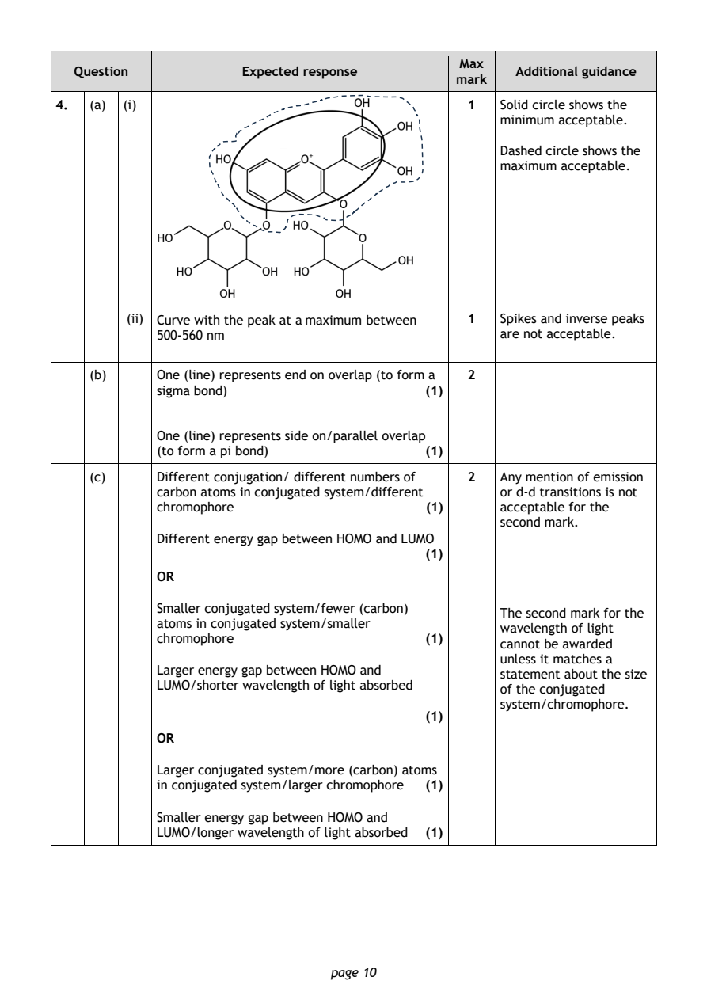
Selectable page text
Max
Question Expected response Additional guidance
mark
4. (a) (i) 1 Solid circle shows the
minimum acceptable.
Dashed circle shows the
maximum acceptable.
(ii) Curve with the peak at a maximum between 1 Spikes and inverse peaks
500-560 nm are not acceptable.
(b) One (line) represents end on overlap (to form a 2
sigma bond) (1)
One (line) represents side on/parallel overlap
(to form a pi bond) (1)
(c) Different conjugation/ different numbers of 2 Any mention of emission
carbon atoms in conjugated system/different or d-d transitions is not
chromophore (1) acceptable for the
second mark.
Different energy gap between HOMO and LUMO
(1)
OR
Smaller conjugated system/fewer (carbon)
The second mark for the
atoms in conjugated system/smaller
wavelength of light
chromophore (1)
cannot be awarded
unless it matches a
Larger energy gap between HOMO and
statement about the size
LUMO/shorter wavelength of light absorbed
of the conjugated
system/chromophore.
(1)
OR
Larger conjugated system/more (carbon) atoms
in conjugated system/larger chromophore (1)
Smaller energy gap between HOMO and
LUMO/longer wavelength of light absorbed (1)
page 10PDF page 11
Paper 2, Question 5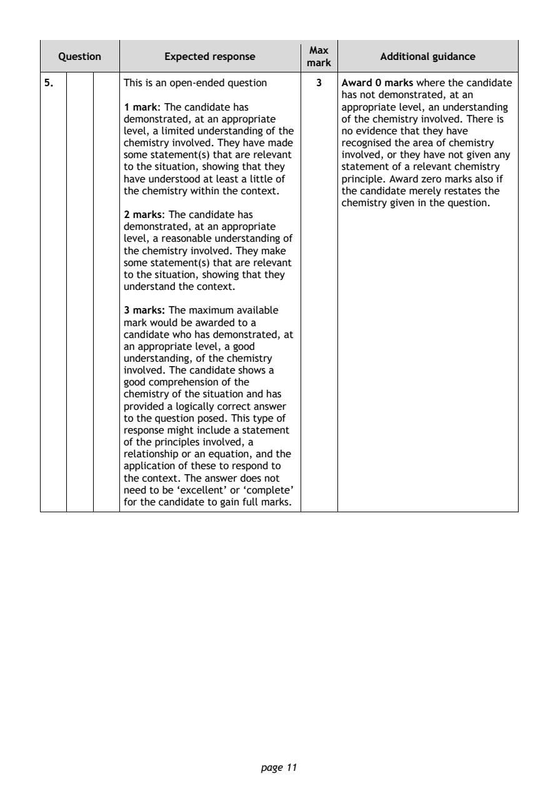
Selectable page text
Max
Question Expected response Additional guidance
mark
5. This is an open-ended question 3 Award 0 marks where the candidate
has not demonstrated, at an
1 mark: The candidate has appropriate level, an understanding
demonstrated, at an appropriate of the chemistry involved. There is
level, a limited understanding of the no evidence that they have
chemistry involved. They have made recognised the area of chemistry
some statement(s) that are relevant involved, or they have not given any
to the situation, showing that they statement of a relevant chemistry
have understood at least a little of principle. Award zero marks also if
the chemistry within the context. the candidate merely restates the
chemistry given in the question.
2 marks: The candidate has
demonstrated, at an appropriate
level, a reasonable understanding of
the chemistry involved. They make
some statement(s) that are relevant
to the situation, showing that they
understand the context.
3 marks: The maximum available
mark would be awarded to a
candidate who has demonstrated, at
an appropriate level, a good
understanding, of the chemistry
involved. The candidate shows a
good comprehension of the
chemistry of the situation and has
provided a logically correct answer
to the question posed. This type of
response might include a statement
of the principles involved, a
relationship or an equation, and the
application of these to respond to
the context. The answer does not
need to be ‘excellent’ or ‘complete’
for the candidate to gain full marks.
page 11PDF page 12
Paper 2, Question 6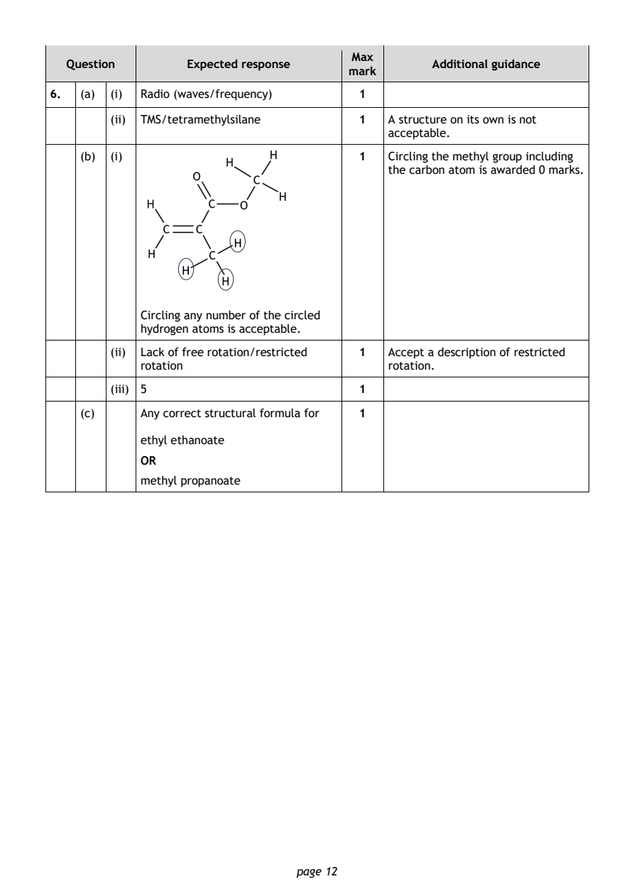
Selectable page text
Max
Question Expected response Additional guidance
mark
6. (a) (i) Radio (waves/frequency) 1
(ii) TMS/tetramethylsilane 1 A structure on its own is not
acceptable.
(b) (i) 1 Circling the methyl group including
the carbon atom is awarded 0 marks.
Circling any number of the circled
hydrogen atoms is acceptable.
(ii) Lack of free rotation/restricted 1 Accept a description of restricted
rotation rotation.
(iii) 5 1
(c) Any correct structural formula for 1
ethyl ethanoate
OR
methyl propanoate
page 12PDF page 13
Paper 2, Question 7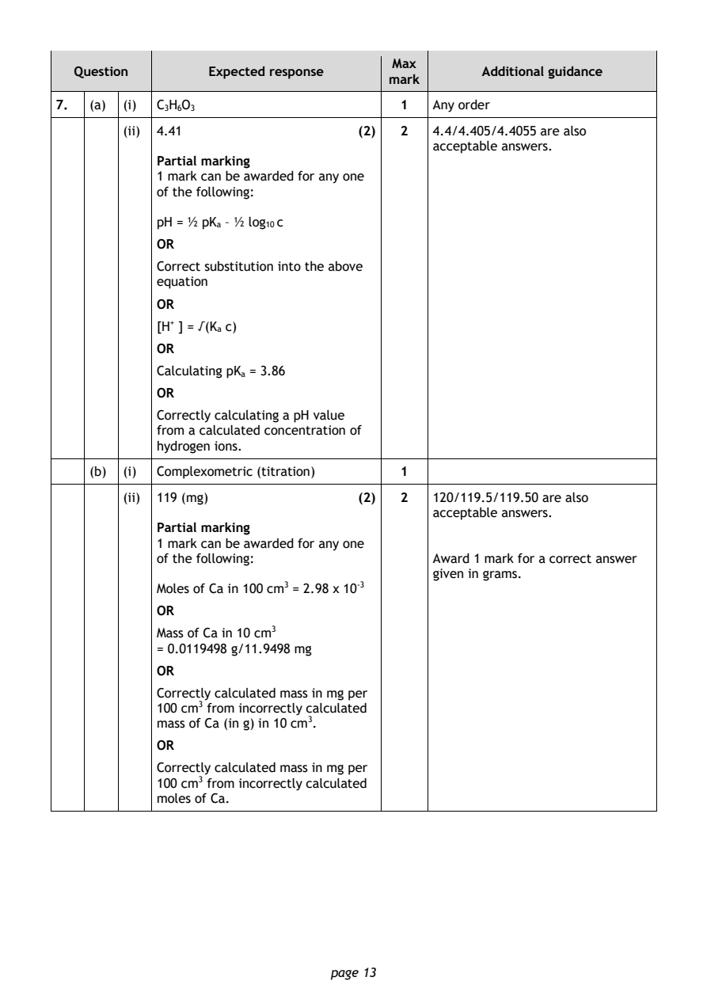
Selectable page text
Max
Question Expected response Additional guidance
mark
7. (a) (i) C₃H₆O₃ 1 Any order
(ii) 4.41 (2) 2 4.4/4.405/4.4055 are also
acceptable answers.
Partial marking
1 mark can be awarded for any one
of the following:
pH = ½ pK – ½ log₁ c
a 0
OR
Correct substitution into the above
equation
OR
[H⁺ ] = √(K c)
a
OR
Calculating pK = 3.86
a
OR
Correctly calculating a pH value
from a calculated concentration of
hydrogen ions.
(b) (i) Complexometric (titration) 1
(ii) 119 (mg) (2) 2 120/119.5/119.50 are also
acceptable answers.
Partial marking
1 mark can be awarded for any one
of the following: Award 1 mark for a correct answer
given in grams.
Moles of Ca in 100 cm³ = 2.98 x 10⁻³
OR
Mass of Ca in 10 cm³
= 0.0119498 g/11.9498 mg
OR
Correctly calculated mass in mg per
100 cm³ from incorrectly calculated
mass of Ca (in g) in 10 cm³.
OR
Correctly calculated mass in mg per
100 cm³ from incorrectly calculated
moles of Ca.
page 13PDF page 14
Paper 2, Question 8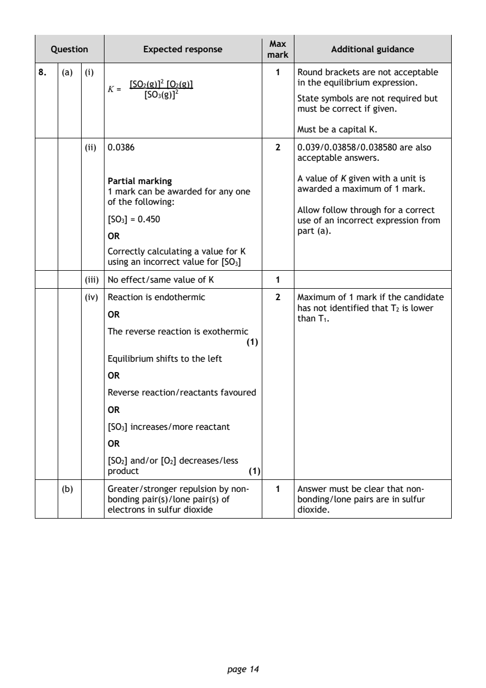
Selectable page text
Max
Question Expected response Additional guidance
mark
8. (a) (i) 1 Round brackets are not acceptable
[SO₂(g)]² [O₂(g)] in the equilibrium expression.
K =
[SO₃(g)]²
State symbols are not required but
must be correct if given.
Must be a capital K.
(ii) 0.0386 2 0.039/0.03858/0.038580 are also
acceptable answers.
A value of K given with a unit is
Partial marking
awarded a maximum of 1 mark.
1 mark can be awarded for any one
of the following:
Allow follow through for a correct
[SO₃] = 0.450 use of an incorrect expression from
part (a).
OR
Correctly calculating a value for K
using an incorrect value for [SO₃]
(iii) No effect/same value of K 1
(iv) Reaction is endothermic 2 Maximum of 1 mark if the candidate
has not identified that T₂ is lower
OR
than T₁.
The reverse reaction is exothermic
(1)
Equilibrium shifts to the left
OR
Reverse reaction/reactants favoured
OR
[SO₃] increases/more reactant
OR
[SO₂] and/or [O₂] decreases/less
product (1)
(b) Greater/stronger repulsion by non- 1 Answer must be clear that non-
bonding pair(s)/lone pair(s) of bonding/lone pairs are in sulfur
electrons in sulfur dioxide dioxide.
page 14PDF page 15
Paper 2, Question 9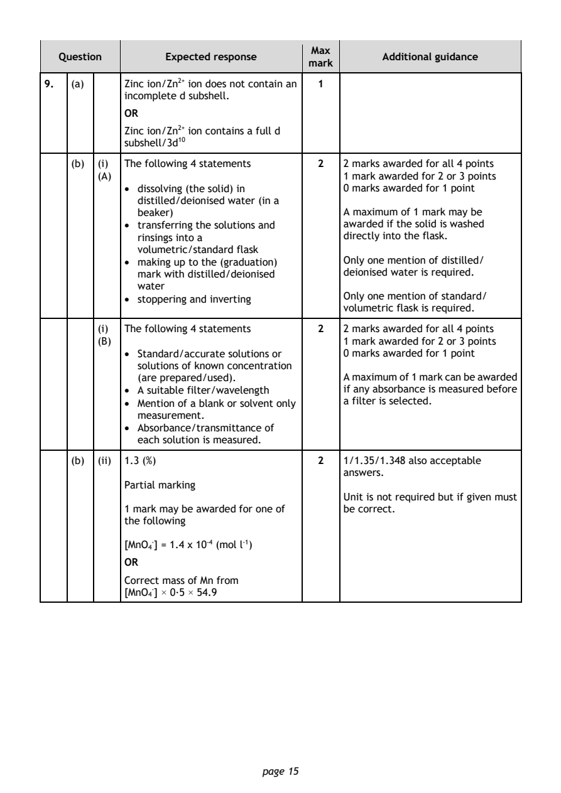
Selectable page text
Max
Question Expected response Additional guidance
mark
9. (a) Zinc ion/Zn²⁺ ion does not contain an 1
incomplete d subshell.
OR
Zinc ion/Zn²⁺ ion contains a full d
subshell/3d¹⁰
(b) (i) The following 4 statements 2 2 marks awarded for all 4 points
(A) 1 mark awarded for 2 or 3 points
• dissolving (the solid) in 0 marks awarded for 1 point
distilled/deionised water (in a
beaker) A maximum of 1 mark may be
• transferring the solutions and awarded if the solid is washed
rinsings into a directly into the flask.
volumetric/standard flask
• making up to the (graduation) Only one mention of distilled/
mark with distilled/deionised deionised water is required.
water
• stoppering and inverting Only one mention of standard/
volumetric flask is required.
(i) The following 4 statements 2 2 marks awarded for all 4 points
(B) 1 mark awarded for 2 or 3 points
• Standard/accurate solutions or 0 marks awarded for 1 point
solutions of known concentration
(are prepared/used). A maximum of 1 mark can be awarded
• A suitable filter/wavelength if any absorbance is measured before
• Mention of a blank or solvent only a filter is selected.
measurement.
• Absorbance/transmittance of
each solution is measured.
(b) (ii) 1.3 (%) 2 1/1.35/1.348 also acceptable
answers.
Partial marking
Unit is not required but if given must
1 mark may be awarded for one of be correct.
the following
[MnO₄⁻] = 1.4 x 10⁻⁴ (mol l⁻¹)
OR
Correct mass of Mn from
[MnO₄⁻] × 0·5 × 54.9
page 15PDF page 16
Paper 2, Question 10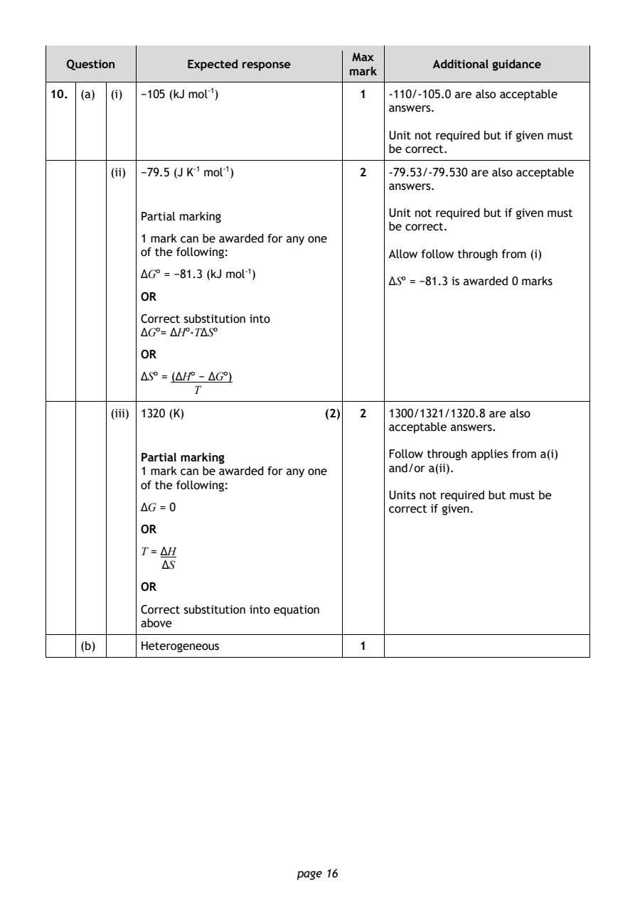
Selectable page text
Max
Question Expected response Additional guidance
mark
10. (a) (i) −105 (kJ mol⁻¹) 1 -110/-105.0 are also acceptable
answers.
Unit not required but if given must
be correct.
(ii) −79.5 (J K⁻¹ mol⁻¹) 2 -79.53/-79.530 are also acceptable
answers.
Unit not required but if given must
Partial marking
be correct.
1 mark can be awarded for any one
of the following: Allow follow through from (i)
ΔGº = −81.3 (kJ mol⁻¹)
ΔSº = −81.3 is awarded 0 marks
OR
Correct substitution into
ΔGº= ΔHº-TΔSº
OR
ΔSº = (ΔHº − ΔGº)
T
(iii) 1320 (K) (2) 2 1300/1321/1320.8 are also
acceptable answers.
Follow through applies from a(i)
Partial marking
and/or a(ii).
1 mark can be awarded for any one
of the following:
Units not required but must be
ΔG = 0 correct if given.
OR
T = ΔH
ΔS
OR
Correct substitution into equation
above
(b) Heterogeneous 1
page 16PDF page 17
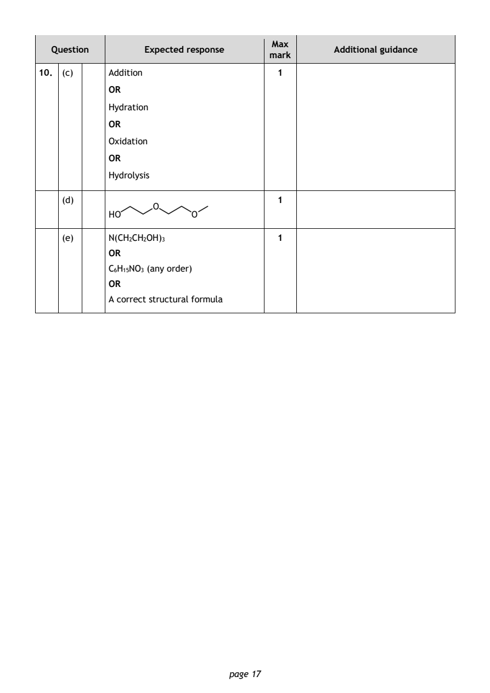
Selectable page text
Max
Question Expected response Additional guidance
mark
10. (c) Addition 1
OR
Hydration
OR
Oxidation
OR
Hydrolysis
(d) 1
(e) N(CH₂CH₂OH) 1
3
OR
C₆H₁ NO₃ (any order)
5
OR
A correct structural formula
page 17PDF page 18
Paper 2, Question 11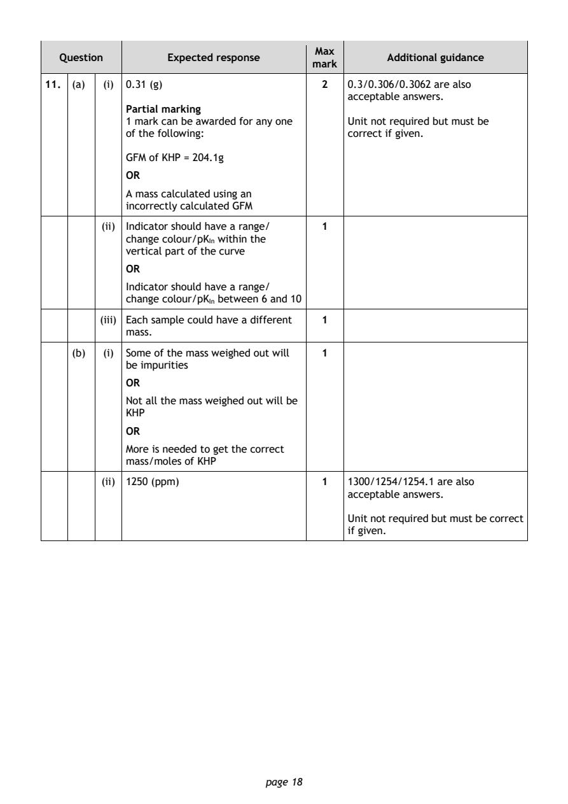
Selectable page text
Max
Question Expected response Additional guidance
mark
11. (a) (i) 0.31 (g) 2 0.3/0.306/0.3062 are also
acceptable answers.
Partial marking
1 mark can be awarded for any one Unit not required but must be
of the following: correct if given.
GFM of KHP = 204.1g
OR
A mass calculated using an
incorrectly calculated GFM
(ii) Indicator should have a range/ 1
change colour/pK within the
vertical part of th^{I}eⁿ curve
OR
Indicator should have a range/
change colour/pK between 6 and 10
In
(iii) Each sample could have a different 1
mass.
(b) (i) Some of the mass weighed out will 1
be impurities
OR
Not all the mass weighed out will be
KHP
OR
More is needed to get the correct
mass/moles of KHP
(ii) 1250 (ppm) 1 1300/1254/1254.1 are also
acceptable answers.
Unit not required but must be correct
if given.
page 18PDF page 19
Paper 2, Question 12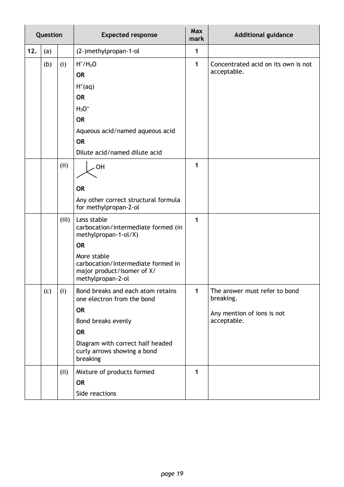
Selectable page text
Max
Question Expected response Additional guidance
mark
12. (a) (2-)methylpropan-1-ol 1
(b) (i) H⁺/H₂O 1 Concentrated acid on its own is not
acceptable.
OR
H⁺(aq)
OR
H₃O⁺
OR
Aqueous acid/named aqueous acid
OR
Dilute acid/named dilute acid
(ii) 1
OR
Any other correct structural formula
for methylpropan-2-ol
(iii) Less stable 1
carbocation/intermediate formed (in
methylpropan-1-ol/X)
OR
More stable
carbocation/intermediate formed in
major product/isomer of X/
methylpropan-2-ol
(c) (i) Bond breaks and each atom retains 1 The answer must refer to bond
one electron from the bond breaking.
OR
Any mention of ions is not
Bond breaks evenly acceptable.
OR
Diagram with correct half headed
curly arrows showing a bond
breaking
(ii) Mixture of products formed 1
OR
Side reactions
page 19PDF page 20
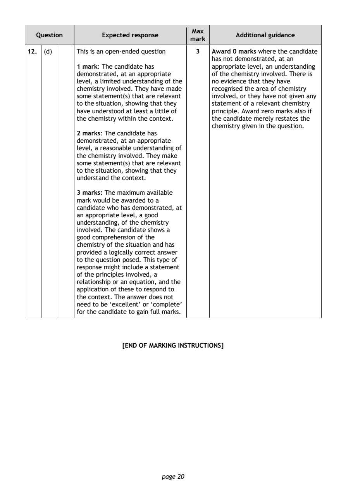
Selectable page text
Max
Question Expected response Additional guidance
mark
12. (d) This is an open-ended question 3 Award 0 marks where the candidate
has not demonstrated, at an
1 mark: The candidate has appropriate level, an understanding
demonstrated, at an appropriate of the chemistry involved. There is
level, a limited understanding of the no evidence that they have
chemistry involved. They have made recognised the area of chemistry
some statement(s) that are relevant involved, or they have not given any
to the situation, showing that they statement of a relevant chemistry
have understood at least a little of principle. Award zero marks also if
the chemistry within the context. the candidate merely restates the
chemistry given in the question.
2 marks: The candidate has
demonstrated, at an appropriate
level, a reasonable understanding of
the chemistry involved. They make
some statement(s) that are relevant
to the situation, showing that they
understand the context.
3 marks: The maximum available
mark would be awarded to a
candidate who has demonstrated, at
an appropriate level, a good
understanding, of the chemistry
involved. The candidate shows a
good comprehension of the
chemistry of the situation and has
provided a logically correct answer
to the question posed. This type of
response might include a statement
of the principles involved, a
relationship or an equation, and the
application of these to respond to
the context. The answer does not
need to be ‘excellent’ or ‘complete’
for the candidate to gain full marks.
[END OF MARKING INSTRUCTIONS]
page 20